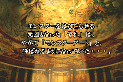

Monster Gate - Ooinaru Dungeon - Fuuin no Orb (Japan)
SRAM 256K VRAM Tile Sheet
Cartridge Identity
- Game Code
A6GJ(FamilyA6G)- Header Title
MONSTERGATE2- Maker / Revision
A4/ rev0- ROM Size
- 8.0 MiB (8,388,608 B)
- Save Media
SRAM 256K- SHA-256
94c4ff4eb0a63232fbc9dacc8d9ebe15d8cdedbfc998edf6f7931a8b43126aa2- Engine / SDK Group
comm-052(3 families)
Screenshots

Observed Battery Save Layout
- Fill Byte & Active Size
0xFFfill · 12–12 / 32,768 B active (entropy 1.58 bits/B)- Active Offset Ranges
0x3384–0x338F(1 total)- ASCII Magic / Headers
- None detected
- Observed Variable Regions
- 0 bytes across 0 spans: None
- Candidate Checksum/Counter Spans
- None
ROM Assets, Compression & Audio
- BIOS Compression
- LZ77 (
0x10): 2 streams · RLE (0x30): 0 streams - ROM Pointer Tables
- 240 tables (0 pointing to validated compressed streams)
- SDK Backup Tags
SRAM_F_V102- VRAM / Palette Snapshot
- 1,489 non-zero 8×8 tiles · 9 palettes · Direct ROM matches: 180 VRAM blocks, 1 palette blocks
Hardware MMIO Subsystems
ppu_display0x80016a8save_bus_sram_flash0x8014eec,0x80734a4